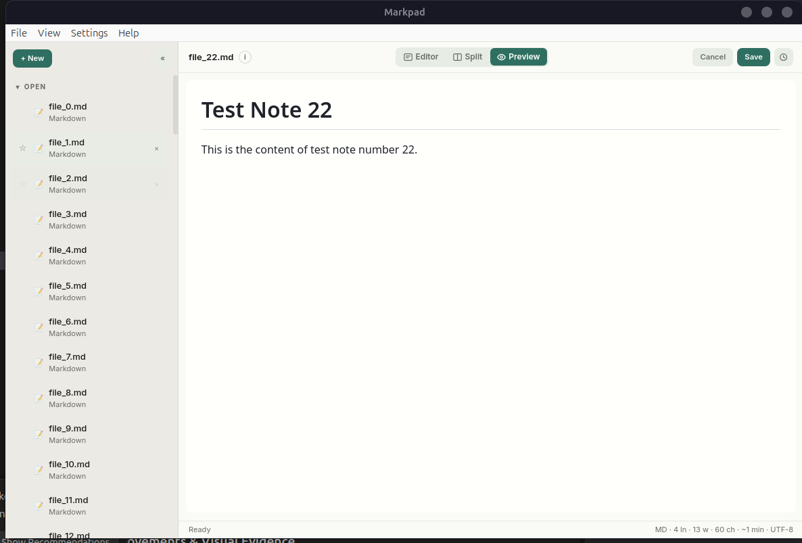

Open-source by shreyam1008
A tiny notepad
that gets out of the way.
Open any text file. Edit Markdown with live preview. View code with syntax highlighting. Version history with diffs. No Electron, no cloud, no telemetry. Under 10 MB.


Real-Time Outline Navigation
Markpad parses markdown headers dynamically as you type. Click any item in the Outline drawer to scroll both the editor and the preview panes synchronously.
Why Markpad
Notepad speed. Modern features.
Split View
Edit and preview side-by-side. Resizable divider. Switch between Editor, Split, and Preview modes.
Open Anything
Markdown, text, JSON, YAML, Python, Go, shell scripts, HTML, CSS, and any text file. Native OS file dialogs.
Session Restore
Close and reopen. Every note, draft, favorite, and active document comes back exactly as you left it.
No Electron
Go + Wails + system webview. A single binary under 10 MB. Low memory. Starts instantly.
Drag, Star, Delete
Drag-and-drop to reorder. Star notes for favorites. Right-click to delete. Full keyboard shortcuts.
Formatting Toolbar
Bold, italic, headings, code, links, images, lists, tables, blockquotes. All with icon buttons and shortcuts.
Syntax Highlighting
Code files get language-aware highlighting via highlight.js. No markdown clutter — just clean, readable code.
Version History + Diffs
Every save creates a snapshot. Click any version for a unified diff. Green for added, red for removed. Restore instantly.
PDF Cards & Image Preview
PDFs stay local-first with read-only cards and Open Externally. Images display inline. No heavy engine bundled.
Single Instance
Only one window runs at a time. Opening a file while Markpad is running adds it to the existing window.
Smart Lists
Lists auto-continue on Enter. Bullets, numbered lists, and task lists. Enter on an empty item ends the list.
Find & Stats
Ctrl+F to search with wrap-around. Word count, reading time, line stats in the status bar. File type icons per note.
Downloads
Get Markpad for your platform.
Built by GitHub Actions on every tagged release.
Under the Hood